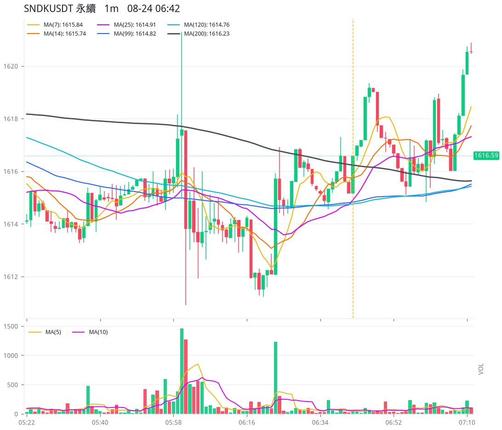
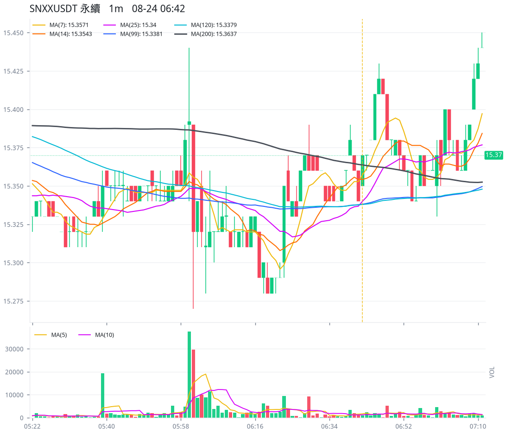
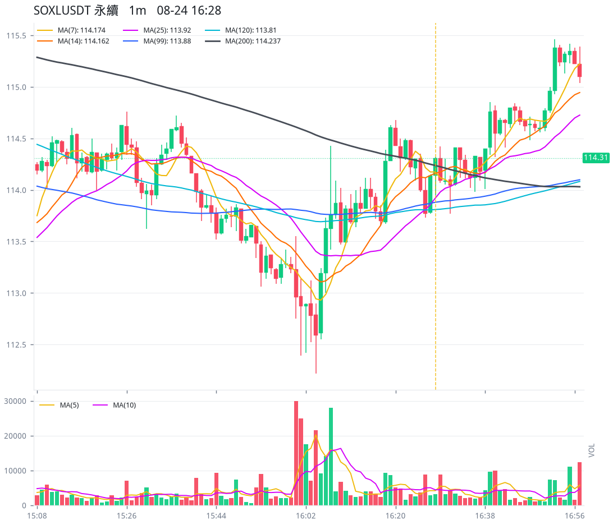
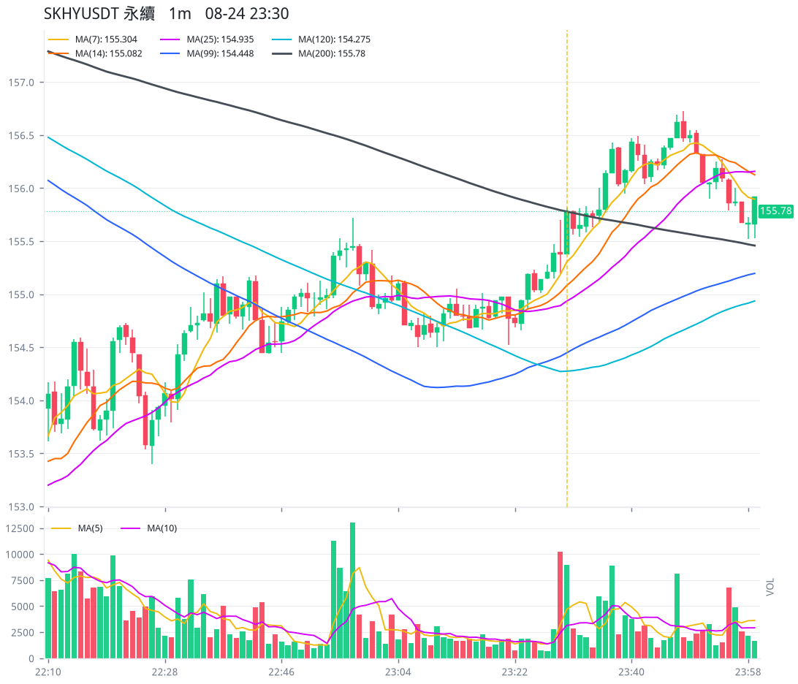
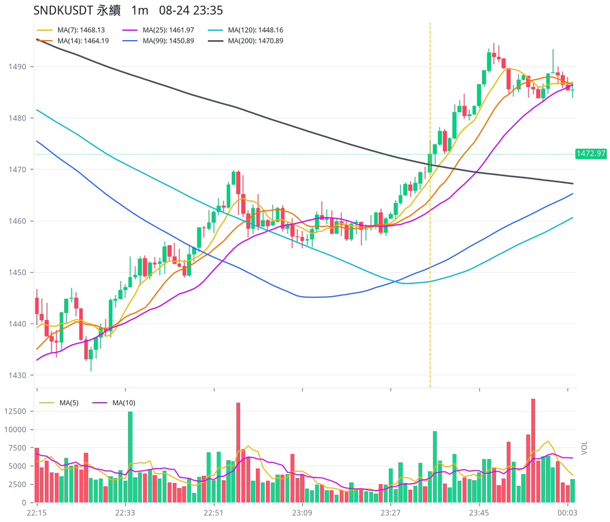
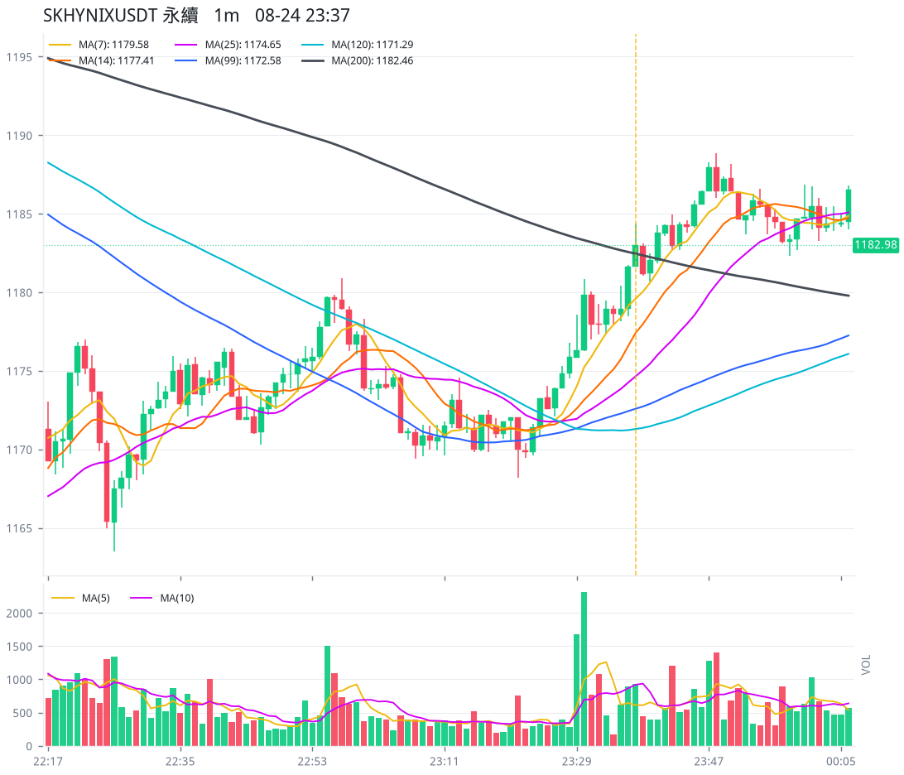
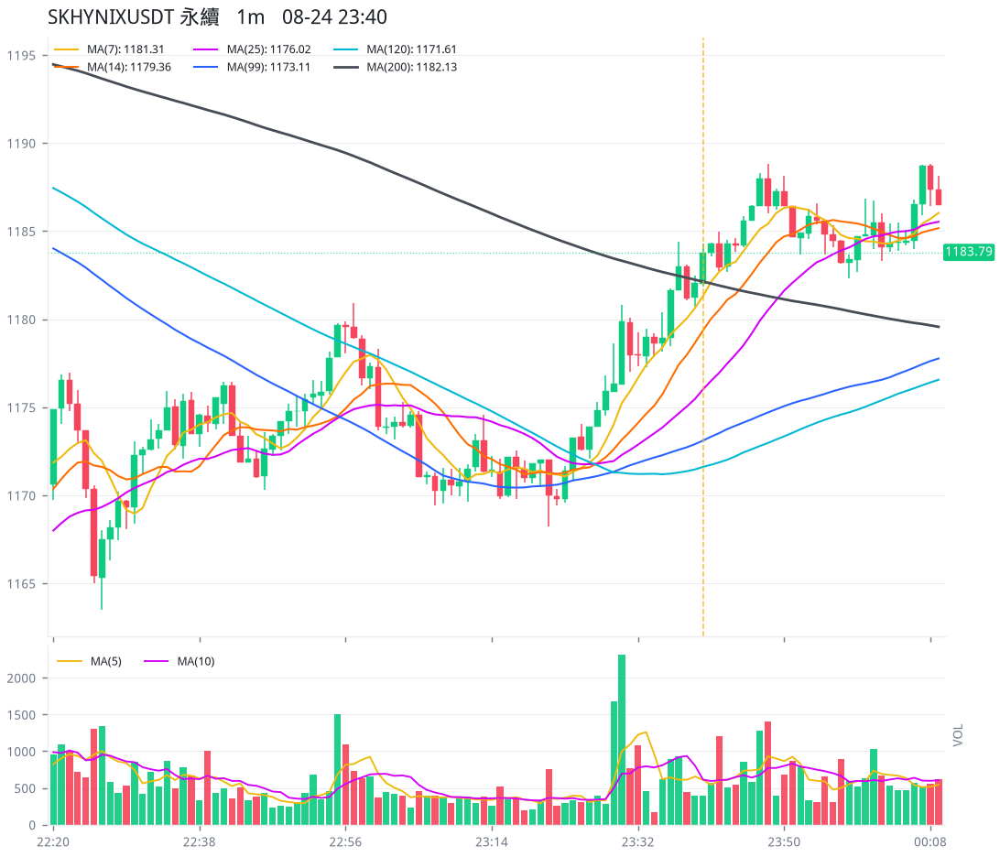
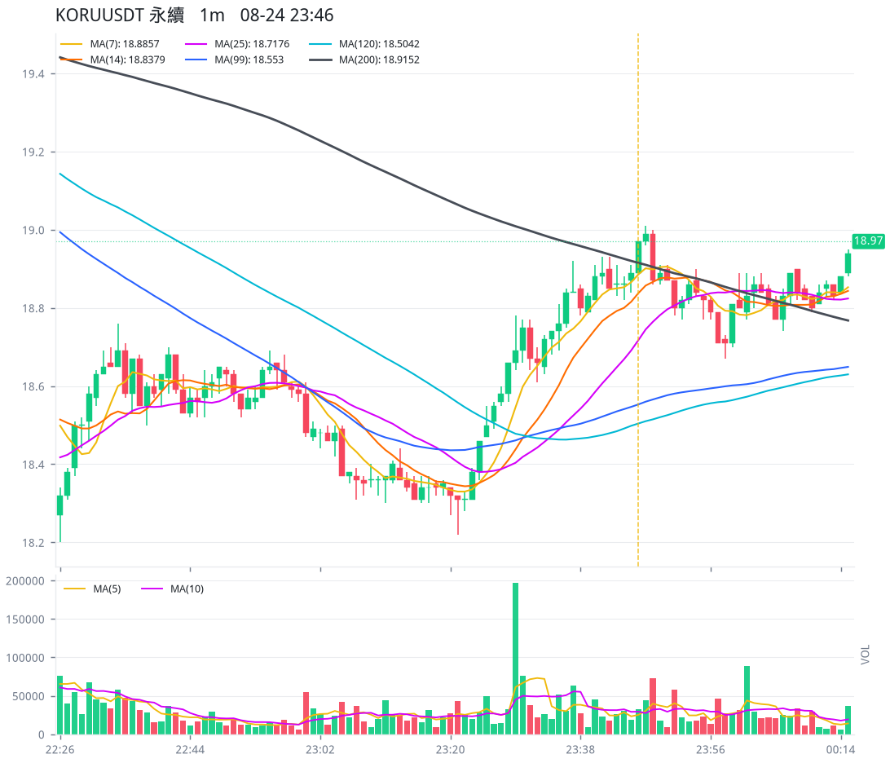
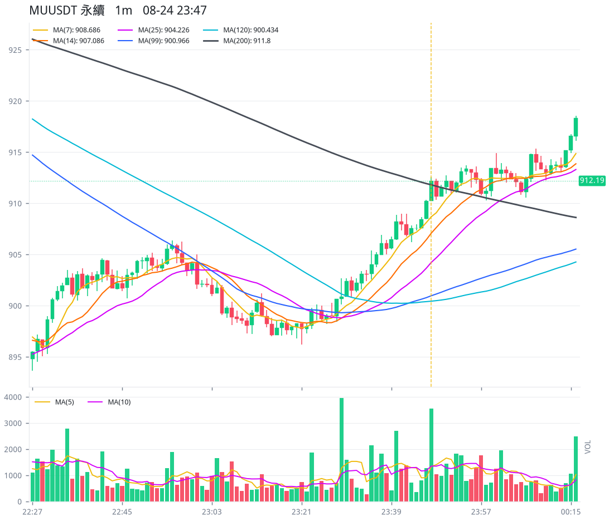
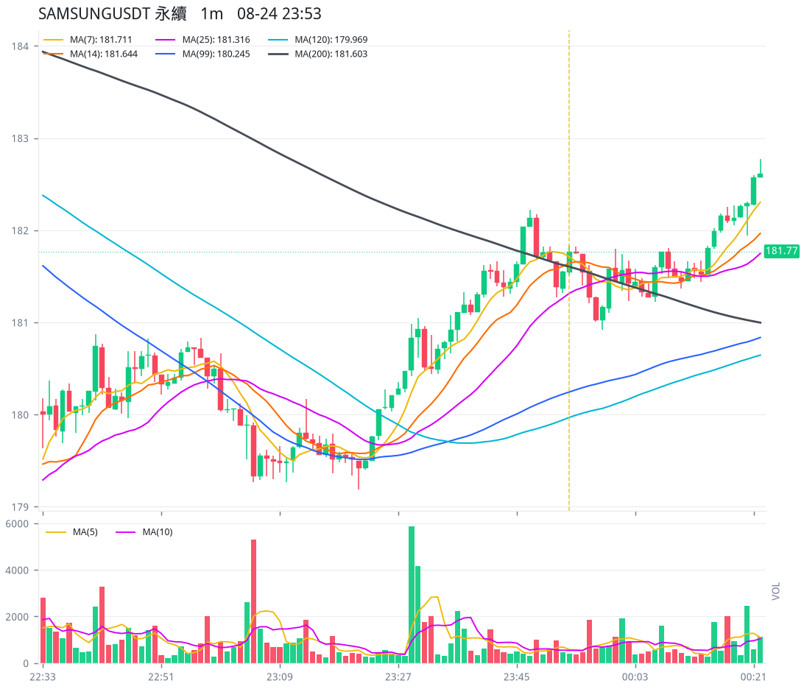

SNDKUSDT 永續#1 · 1m · 08-24 06:42 · 成交額第 1
-0.04%
1616.59 剛站上 1m MA200 · ext +0.02%
close 1616.59 entry 1616.59 MA7 1615.84 14 1615.74 25 1614.91 99 1614.82 120 1614.76 200 1616.23 5m +0.15% 15m -0.04% 30m +0.27% 1h +0.43%

2026-08-24 台北時間 · USDT 股票合約成交額前 10 · 17 筆訊號（剛站上 17）
規則：一分K 的 MA7 > MA14 > MA25 > MA99 > MA120，且本根收盤剛站上一分K MA200（不是日線/小時線）。進場用下一根開盤。
只掃幣安 USDT 股票合約（美股／韓股／港股／A 股／Pre-IPO），不含加密、黃金原油等商品。
標的：SNDKUSDT、SKHYNIXUSDT、SPCXUSDT、SOXLUSDT、KORUUSDT、MUUSDT、SKHYUSDT、SNXXUSDT、MSTRUSDT、SAMSUNGUSDT
close 1616.59 entry 1616.59 MA7 1615.84 14 1615.74 25 1614.91 99 1614.82 120 1614.76 200 1616.23 5m +0.15% 15m -0.04% 30m +0.27% 1h +0.43%

close 15.37 entry 15.37 MA7 15.3571 14 15.3543 25 15.34 99 15.3381 120 15.3379 200 15.3637 5m +0.26% 15m -0.13% 30m +0.52% 1h +0.72%

close 114.31 entry 114.31 MA7 114.174 14 114.162 25 113.92 99 113.88 120 113.81 200 114.237 5m -0.02% 15m +0.43% 30m +0.63% 1h +0.24%

close 114.33 entry 114.32 MA7 114.206 14 114.162 25 114.14 99 113.925 120 113.852 200 114.139 5m +0.31% 15m +0.56% 30m +0.78% 1h +0.94%

close 155.78 entry 155.78 MA7 155.304 14 155.082 25 154.935 99 154.448 120 154.275 200 155.78 5m +0.01% 15m +0.39% 30m +0.08% 1h +0.71%

close 155.76 entry 155.76 MA7 155.541 14 155.256 25 155.055 99 154.544 120 154.3 200 155.74 5m +0.18% 15m +0.46% 30m +0.08% 1h +0.52%

close 1472.97 entry 1472.97 MA7 1468.13 14 1464.19 25 1461.97 99 1450.89 120 1448.16 200 1470.89 5m +0.55% 15m +1.14% 30m +0.73% 1h +2.48%

close 12.65 entry 12.66 MA7 12.5571 14 12.485 25 12.4448 99 12.2317 120 12.1792 200 12.6088 5m +1.18% 15m +2.53% 30m +1.50% 1h +5.37%

close 1182.98 entry 1182.97 MA7 1179.58 14 1177.41 25 1174.65 99 1172.58 120 1171.29 200 1182.46 5m -0.00% 15m +0.16% 30m +0.49% 1h +0.72%

close 1183.79 entry 1183.76 MA7 1181.31 14 1179.36 25 1176.02 99 1173.11 120 1171.61 200 1182.13 5m +0.15% 15m +0.09% 30m +0.24% 1h +0.71%

close 110.43 entry 110.42 MA7 110.074 14 109.536 25 108.729 99 107.876 120 107.834 200 110.197 5m +0.45% 15m -0.12% 30m +0.72% 1h +0.52%

close 18.97 entry 18.97 MA7 18.8857 14 18.8379 25 18.7176 99 18.553 120 18.5042 200 18.9152 5m -0.90% 15m -0.74% 30m +0.05% 1h -0.84%

close 182.04 entry 182.04 MA7 181.576 14 181.296 25 180.851 99 180.041 120 179.807 200 181.756 5m -0.36% 15m -0.26% 30m +0.07% 1h -0.31%

close 912.19 entry 912.17 MA7 908.686 14 907.086 25 904.226 99 900.966 120 900.434 200 911.8 5m -0.01% 15m +0.08% 30m +0.55% 1h +0.43%

close 911.57 entry 911.59 MA7 909.743 14 908.168 25 905.153 99 901.308 120 900.544 200 911.538 5m +0.19% 15m +0.05% 30m +0.70% 1h +0.56%

close 912.04 entry 912.02 MA7 911.444 14 909.514 25 906.704 99 901.843 120 900.821 200 911.188 5m -0.12% 15m +0.31% 30m +0.97% 1h +0.43%

close 181.77 entry 181.77 MA7 181.711 14 181.644 25 181.316 99 180.245 120 179.969 200 181.603 5m -0.33% 15m -0.10% 30m +0.49% 1h -0.08%

| # | 標的 | 時間 | 種類 | 偏離 | 5m | 15m | 30m | 1h | 4h |
|---|---|---|---|---|---|---|---|---|---|
| 1 | SNDKUSDT | 08-24 06:42 | 上站 | +0.02% | +0.15% | -0.04% | +0.27% | +0.43% | -3.28% |
| 2 | SNXXUSDT | 08-24 06:42 | 上站 | +0.04% | +0.26% | -0.13% | +0.52% | +0.72% | -6.57% |
| 3 | SOXLUSDT | 08-24 16:28 | 上站 | +0.06% | -0.02% | +0.43% | +0.63% | +0.24% | +0.47% |
| 4 | SOXLUSDT | 08-24 16:36 | 上站 | +0.17% | +0.31% | +0.56% | +0.78% | +0.94% | -0.11% |
| 5 | SKHYUSDT | 08-24 23:30 | 上站 | +0.00% | +0.01% | +0.39% | +0.08% | +0.71% | — |
| 6 | SKHYUSDT | 08-24 23:33 | 上站 | +0.01% | +0.18% | +0.46% | +0.08% | +0.52% | — |
| 7 | SNDKUSDT | 08-24 23:35 | 上站 | +0.14% | +0.55% | +1.14% | +0.73% | +2.48% | — |
| 8 | SNXXUSDT | 08-24 23:35 | 上站 | +0.33% | +1.18% | +2.53% | +1.50% | +5.37% | — |
| 9 | SKHYNIXUSDT | 08-24 23:37 | 上站 | +0.04% | -0.00% | +0.16% | +0.49% | +0.72% | — |
| 10 | SKHYNIXUSDT | 08-24 23:40 | 上站 | +0.14% | +0.15% | +0.09% | +0.24% | +0.71% | — |
| 11 | SOXLUSDT | 08-24 23:43 | 上站 | +0.21% | +0.45% | -0.12% | +0.72% | +0.52% | — |
| 12 | KORUUSDT | 08-24 23:46 | 上站 | +0.29% | -0.90% | -0.74% | +0.05% | -0.84% | — |
| 13 | SAMSUNGUSDT | 08-24 23:46 | 上站 | +0.16% | -0.36% | -0.26% | +0.07% | -0.31% | — |
| 14 | MUUSDT | 08-24 23:47 | 上站 | +0.04% | -0.01% | +0.08% | +0.55% | +0.43% | — |
| 15 | MUUSDT | 08-24 23:49 | 上站 | +0.00% | +0.19% | +0.05% | +0.70% | +0.56% | — |
| 16 | MUUSDT | 08-24 23:52 | 上站 | +0.09% | -0.12% | +0.31% | +0.97% | +0.43% | — |
| 17 | SAMSUNGUSDT | 08-24 23:53 | 上站 | +0.09% | -0.33% | -0.10% | +0.49% | -0.08% | — |